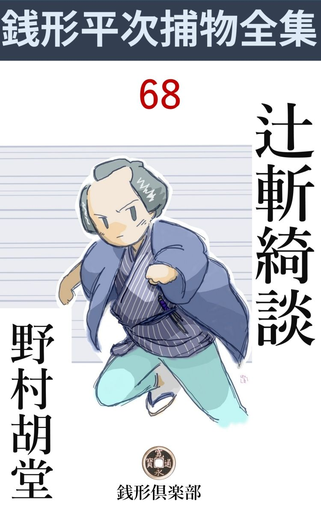
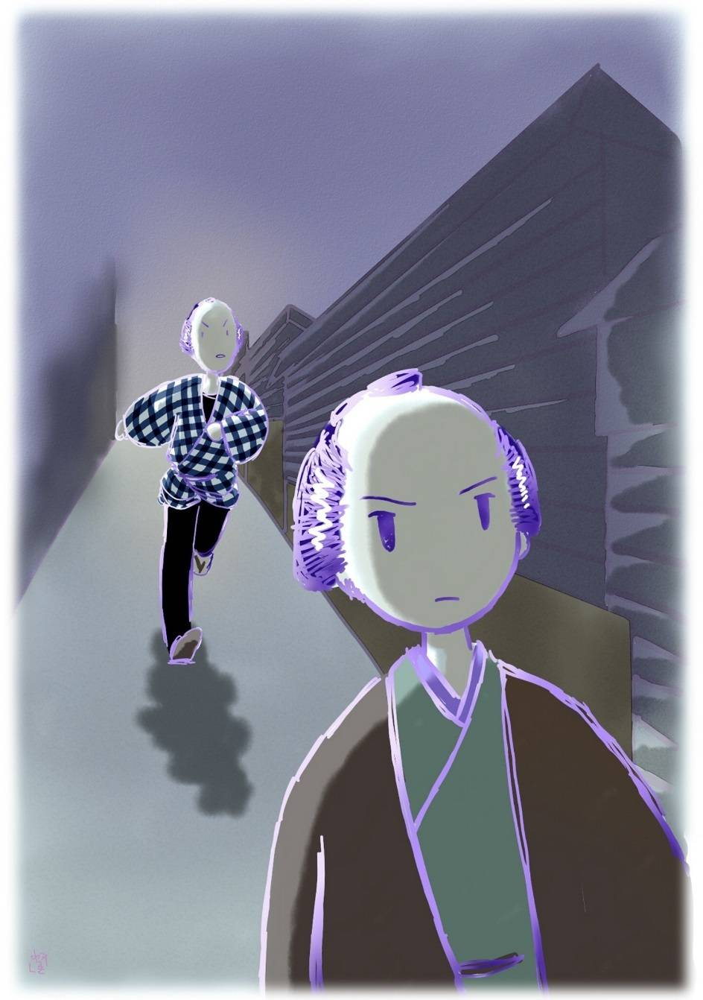

| 辻斬綺談: 銭形平次捕物全集第68話 (銭形倶楽部) | |
| 野村胡堂 | |
| ZENIGATA CLUB (2018) | |

一
「親分、あっしはもう癪 にさわって癪にさわって」
ガラッ八の八五郎は、いきなり銭形平次の前に、長んがい顎を漂よわせます。
よく晴れた秋の日の朝、平次は所在なく雁首 を爪繰りながらあまり上等でない五匁玉の煙草包をほぐして居るのでした。
「何をブリブリしているんだ。腹の立て栄えのする面じゃないぜ、手前なんか」
一服吸い付けて、平次は暫らく薄紫色の煙をなつかしむ風情です。
「だって、これが癪にさわらなかった日にゃ、親分、生きているとは言えないぜ」
「大層思いこんでしまったんだね。その癪にさわるわけを言って見な。誰がいったい手前に三年前の割 前 勘 定 なんか催促したんだ」
平次はまだニヤリニヤリとして居ります。
「そんなんじゃねえ。割前なんか、払わねえことに決めているから、催促されたって驚くあっし じゃねえが------」
「成程、気は確かだ」
「町内の蝦 子 床へ入って、順番を待つうち、中で木枕に頭を当てて、ついウトウトとしかけたと思うと、多勢立て込んだ客が、あっし がいるとも知らずに、飛んでもねえ話を始めた------」
「------」
ガラッ八の癪の原因は、何か筋道が立ちそうな気がして、平次も少しばかり本気になります。
「------近頃神田一円を荒し廻る辻斬野郎、------最初は弱そうな二本差を狙っていたが、近頃はタチが悪くなって、町人でも女子供でも、見境なくバサリバサリやった上、死骸の懐中物 まで抜くというじゃないか、------武家の悪戯は、町方役人の知ったことじゃねえと言う積りだろうが、一体誰がこれを取締ってくれるんだ、------銭形とか平次とか、大層顔の良いのが居たって、辻斬へ指も差せねえようじゃ案 山 子 ほどの役にも立たねえ、------と斯 うだ、親分」
ガラッ八が腹を立てたのも無理はありませんが、町内の衆が、浮世床で不平を漏 したのも理 由 のあることでした。この夏あたりから、神田一円を荒し廻る辻斬の無法惨虐な殺 戮 は町人達は言う迄もなく武家も役人も、御用聞の平次も腹に据え兼ねていたのです。併 し、市 井 の小泥棒や、町人同士の殺傷沙汰と違って、腕の利いた辻斬では、平次の手にも負えず、それに、神出鬼没の早業で、幾度か正体を見届け損ねて、夏も過ぎ、秋も半ばになったのでした。
「その通りだよ、八、町内の衆の言う事にこれんばかりも間違いはない」
平次は自責の念に堪え兼ねた様子で、思わず深々とうな垂れます。
「親分、そう言われると、一も二もねえ。が、床屋の店先で、遠慮もなく親分の悪口をまくし立てるのは、憎いじゃありませんか。一番憎い口をきいたのは、遊び人の------」
「そいつは聴かない方が宜い、------なア八、憎いのは町内の衆じゃなくて、人間を牛 蒡 や人参のように斬って歩く、辻斬野郎じゃないか」
「------」
平次はツイ、無法な殺戮者に対する、鬱積した怒 を爆発させます。
「二本差同士ならともかく、町人まで斬って歩くのは我慢がならねえ。八、手を貸してくれるか」
「そいつは危いぜ、親分、辻斬は大抵、腕自慢が嵩 じた野郎だ」
「どんな腕の出来る人間でも、悪業 が積めば年貢 を納める時が来るものだ、------俺はきっと辻斬野郎を縛って見せる。年寄や女子供まで斬って歩くような野郎を、どんな大身だって勘弁して置くわけにいかない」
平次は拱 いた腕をほぐしました。眉宇の間に、何やら決断たるものが閃めくのでした。
「親分、早速出かけましょうか」
そう言い聴かされるとガラッ八は、大江山へ酒呑 童子 でも退治に行くような気組です。
「辻斬はまだ朝寝をしているよ」
「違げえねえ」
「だがな、八、無暗に歩いても、いつ辻斬に逢うか見当が付かねえ、------まさか鉦 太鼓で捜すわけにも行くめえから、少し物事に順序を立てて考えてみようじゃないか」
平次は日頃の冷静に返ると、理智的にプランを立てて、その中へ辻斬を追い込もうとするのでした。
「順序てえと」
「早い話、辻斬は夏から始まって、十二三人も害 めたろうが、不思議なことに荒し廻るのは、両国から明神様まで、外神田一円と下谷浅草の端っこだけ、------寛永寺の寺内、湯島天神様の境内、浅草寺本願寺寄りを避けて、大川と神田川の向うへは一度も乗り出さない」
「------」
「こいつは、曲者が外神田に住んでいる証拠だ。どんな大胆不敵な野郎でも、血刀を腰に差して、夜更けの御見付は通られねえ」
「成程ね」
「明神下から両国までとなると、思いの外狭くなる。その間に住んでいる、旗本御家人の殺伐な次男三男、お留守居の伜、若くて荒っぽい浪人、------こんな手合を調べたら、思いのほか早く目星が付くというものだろう」
平次の論理は、もう整然とした網を描いて、その中に辻斬の曲者を追い込んで行きます。
「それじゃ、わけは無いじゃありませんか。辻斬なんかやる野郎は、どうせ親孝行で身持のよい筈は無い。五六人性の悪いのを当って見ちゃ------」
「馬鹿なことを言うな、相手はいずれ武家だ。怪しい素振りがあるからと言って、直ぐしょっ引いてくるわけにはいかねえ------」
「成程ね」
「こうしてくれ。十二三人も斬るうちには、いずれ一度や二度は、腰の物を研 屋 へ出すだろう。外神田の研屋を、下っ引を二三人使って、片っ端から当って見てくれ。外神田に無きゃ、下谷、本郷、浅草、日本橋あたりまで、手を延ばすが宜い」
「------」
「人を斬った刀の脂 は、素人の手では、拭いても洗っても落ちるものじゃねえ。脂の浮いた刀か、刃こぼれのある刀を、近頃研屋へ持込んだ奴が判れば、占めたものだ」
「成程、そいつは気が付かなかった、------それじゃ親分、三日ばかり待っておくんなさい。三四人手分けをして、江戸中の研屋を漁 って来ますから」
「頼むぜ、八」
「親分は？」
「その間、昼寝でもしているよ」
平次は淋しく笑いました。腹の中では、辻斬を捜し出してその刃の前に立とうと言った、突き詰めた計画を樹 てていたのです。
二
辻斬を釣り出すことは、危険はともかく、驚くべき辛抱強さを必要とする仕事でした。三月ばかりの間に十何人殺 めた曲者が、毎晩外神田をうろうろして居るとは限らず、よしや犠牲者を漁 り歩いたところで、甘 い具合に平次と廻り逢うことは保証が出来なかったのです。
平次は一と晩毎に、念入りの変装を凝らしました。遊び人、手代、隠居、安用人、中間、------と、それぞれの身 扮 が、素人が見ては、岡っ引の変装とは思えぬほど、手に入ったものですが、夜と共に、外神田中を歩き廻って、もう七日あまり、ろくな犬にも吠えられなかったのでした。
その間、不思議な事に、三日の日限を切って、研屋あさりに出かけた、ガラッ八からも何の便りもありません。
平次は併し、根気よく続けました。近頃は斬った死骸の懐中物まで抜く、夜盗にひとしい辻斬の所業は、平次の職業意識を、一日毎にかき立てて行くのです。
「親分、どこの研屋も、血刀なんか引受けた覚えはないって言いますよ」
ガラッ八がぼんやり帰って来たのは、八日目の朝でした。
「表から十手なんか突っ張らかして、開き直って訊いて歩いたんだろう」
「へエ------」
「馬鹿野郎、誰がそんな事をヌケヌケ御用聞に言うものか。------いずれ曰 くのある腰の物を引受けるのは、筋の通らない小さい研屋に決っているんだ。奉公人か何か呼出してよ、定めの研 賃 の倍も三層倍も取ったのはないか------そいつを訊き出してくるが宜い」
「へエ------」
「もう一度、町内から廻って来やがれ」
「へエ------」
ガラッ八はすごすごと立上がりました。
「待ちな、八」
「へエ------」
「研屋廻りは昼だけで沢山だ。日が暮れたら俺の方へ手伝ってくれ」
「何をやらかすんで------？ 親分」
「辻斬を追い出すのに、どうも一人じゃ手が廻らない。今晩から二た手に別れて、右左から、東西から、南北から------と言う具合に漁って見ようと思うんだ」
「そいつは危いネ、親分」
「なアに、手前は逃げ廻って居りゃ宜いのさ」
「逃げる前にバサリとやられ相 ですぜ、親分。どうもこの二三日夢見が悪いと思った」
ガラッ八は甚だ気が進まない様子です。
「仕様のねえ野郎だ。それでお上の御用が勤まるかい、馬鹿野郎」
「やりますよ、親分、やらないとは言やしませんよ」
「それじゃ斯うしようじゃないか、手前は十手をひけらかして、御用の提灯をブラ下げて歩くんだ。どんな酔興 な辻斬だって、手先御用聞を斬るようなことはあるめえ」
「それならやりますよ、親分」
勇猛なガラッ八も腕の利いた辻斬には怖毛 を振るっております。
「獣を追い出しゃ、手前は役済みよ。それなら、どんな唐変木でも勤まるだろう」
「まるで勢子 だね、親分」
「その気で、日が暮れたら打合せに来るが宜い」
「へエ------」
ガラッ八は器量が悪く立ち去りました。が、威勢よくガラッ八を叱り飛ばした平次の方も、何の成算があるわけではなかったのです。
そのうちにも、事件はますます急迫しました。平次がそんな計画を樹てているうち、人斬の暗躍は休んだわけではなく、十二日の間に三カ所ばかりで、脅 かされたり斬られたり、外神田一帯、いよいよ物情騒然たる有様です。
思い立ってから十五日目、物持の隠居が、碁か雑俳の集りから帰ると言った恰好で、平次は佐久間町三丁目から筋 違 橋 （今の万世橋）の方へ辿って居りました。
薄寒い月のない晩で、頭巾に顔を隠すには好都合ですが、着 膨 れて懐手までして居るので、何となく掛引の自在を欠きそうです。
佐久間町一丁目、本田唐之助屋敷角まで来ると、往来はハタと絶えて、左手は川 岸 淵 まで空地、右手は屋敷の塀で、しばらくは淋しい道が続きます。
平次は小腰をかがめて、杖などを突いて居りました。右手は懐に入れたまま、ときどき頭巾の眼庇 をあげて、月の無い空を仰いで見たりして居るのでした。
この上もない遅々たる歩み------、来るなら今だ------という風にもそれは見えます。
屋敷の角を曲って、筋違橋の方へ出ようという時、
「え------ッ」
横合から紫電 一閃、平次は真っ二つ------と思いきや、一髪の違いで危うく免れました。サッと斬って落されたのは、突いていた長い杖だけ、隠居にやつした平次の身体は、よろめくように、後へヨロヨロと二三歩退いたのです。
「危ない、何をしなさる」
そんなとぼけたことを言う平次は、もう余裕を取戻して、相手の第二の襲撃を待って居たのでしょう。
「えーッ」
続く襲撃、相手に心得があると見て取った曲者は、備えも直さず真一文字に胴へ------、
「冗談しちゃいけない」
平次はもう一度よろけました。いったい辻斬というものは、据物斬の要領で、最初の一と太刀を損ずれば、刀を引いて引揚げるのが本当です。二度まで空を斬らせられて、なお執念 く絡み付くのは、物盗りにかかった、何よりの証拠とも見るべきでしょう。
三度、切ってかかる前に、隠居と見せた平次の腰はシャンと伸びました。懐に入った右手を抜くと、得意の投げ銭がサッと夜風を剪 って曲者の面上へ------。
「あッ」
曲者は一刀の背で辛くも面をかこいました。ジーンと刃金を叩く銭の音。
その刃 を返して、襲撃に移る前、平次の手からは、第二、第三、第四の銭が、糸を繰り出すように曲者の面へ、肘 へ、喉笛へと見舞います。
驚いたのは曲者でした。唯の町人の隠居と思ったのが、江戸で一番強 かな御用聞、銭形の平次と判ると、背 を返してサッと飛んだのです。いや、平次の投げ銭は恐れないにしても、物々しく四方にひしめく気合、いずれは役人の包囲の網が、ここを目当てに絞られるでしょう。
「御用」
曲者の背を見ると、平次は浴びせるように御用の声を掛けました。相手の足を縮 ませるには、これほど有効な掛声はありません。
曲者はそれにも関わらず、人間ばなれのした軽捷さで、路地から路地へ、真一文字に旅籠町の方へ飛びます。
「野郎ッ、逃げるかッ」
その後を追う平次、少し着膨れておりますが、捕物に馴れた足は、さながら宙を飛んでヒタヒタと曲者に迫るのでした。
「御用ッ」
もういちど叱咤した平次の声、それが木魂 するように、
「御用だぞッ」
昌平坂の方から、ガラッ八の声が応じます。その夜、明神様を中心に、平次と呼応して漁っていたガラッ八が、遠くの方から狩り出してくる、平次の声を聞いて、急に勢 い立ったのは無理もありません。
あと十歩、平次の手は曲者の背 に及びそうになると、旅籠町の往来から、サッと路地へ曲者の姿は隠れます。
「曲者ッ、御用だッ」
続いて路地の中へ、飛込む平次。
「御用だぞッ」
向うから木魂するように、御用の声を掛けて、飛んで来たのは、紛れもないガラッ八の、長大な姿だったのです。

「あッ、八」
「親分」
闇の中でも、お見それ申す顔ではありません。
「曲者は？」
「知りませんよ」
「確かにこの路地に追い込んだ筈だ」
二人は顔を見合わせました。路地の中には犬っころ一匹いる様子もなかったのです。
三
「親分」
ガラッ八は指しました。僅か三十間ばかりの路地の中に、灯の点いているのはたった一軒、それも入口の格子が半分開いて、ここへ逃込みましたと言わぬばかりのがあったのです。
「この家を知っているか、八」
「小田巻直次郎------で」
「悪いな」
平次も首を縮めて小さく舌打ちしました。小田巻直次郎というのは、神田一番の悪侍で、どこの藩の浪人か知りませんが、とにかく、押借、強請 、喰い逃げ、喧嘩、博奕 、人の嫌がる事なら、何でもやって歩くと言った、飛んでもない中年男だったのです。
その癖、腕前は抜群で、小田巻流を編み出して、近いうちに、八間四面の道場を建て、江戸中の道場を一つ残らず叩き潰す------と、口癖のように豪語して居りました。------相手が悪い------と銭形平次が眉を顰 めたのも無理のないことです。
「やり相な柄ですぜ、親分」
ガラッ八は指で斬る真似をして見せました。小田巻直次郎なら、三月の間に十何人斬っても、その死骸から財布を抜いても、何の不思議もありません。
「いや、------小田巻にしては弱過ぎたと思うが------」
「へエ------」
「とにかく当って見ようか、八」
「大丈夫ですか。相手の出ようじゃ、引っ込みが付かなくなりますよ」
ガラッ八が二の足を踏む間に、平次はもう、小田巻直次郎の浪宅の入口に立っております。
「御免下さい」
「------」
「お願い申します」
「通れッ」
酒気を帯びた声が、平次をのっけ から門付け乞食扱いにします。
「物貰いじゃございません。少々物を伺います」
「明日にせい」
取付く島もありません。が、平次は押して訊き返しました。
「小田巻先生がいらっしゃいましょうか、私は平次でございますが」
「何処の平次だ」
「お上の御用で、夜中この辺を廻っておりますと、いきなり私に斬りかけた奴がございます」
「金があると思われたんだろう。怪我が無かったら、諦めろ」
小田巻直次郎傍若無人の放言をしながら、盃を重ねている様子。平次にこう言わせて、立とうともしません。
「それを追い込んで来ると、曲者はこの路地に逃げ込みました。外に逃げる筈はございません。路地の中で、表の開いているところと言うと、お宅ばかり------」
「何だと------」
小田巻直次郎は立上がった様子です。
「若 しや、曲者が飛込んでは居ませんでしょうか。ちょいと摘 んで、お引渡し下されば、有難うございますが------」
「黙れ」
「へエ------」
「この小田巻直次郎が、辻斬や剽盗 をかくまって居るとでも言うのか」
「飛んでもない、先生」
「そう申すなら、如何にも家捜しでも何でもさしてやる。その代り、もし曲者が居なかったら、その方の首を申受けるぞ」
「へエ------」
障子をガラリと開けると、中は小さい居間、長火鉢の銅壺に徳利を突っ込んで、甜 物 を二つ三つ猫板に並べ、一人者の気楽に独酌をやっている真っ最中です。
「この通り、たった二た間の家だ。あとは台所に、押入に、雪 隠 、匿す場所も、隠れる場所もある筈はない。踏込んで、床下なり、天井裏なり、勝手に捜せ」
「へエ------」
そう言いながらも平次は、上り框 からザッと眼を配りました。小田巻直次郎が言う通り、隠しようもない狭い家の中、これで押入と便所の戸を開けて貰えば、一ぺんに見通せるわけです。
「小田巻直次郎、これでも武士だ。辻斬や剽盗に朋友も知己もない、------さア、踏込んで見ぬか。怪しい者はいない代り、金はうんとあるぞ。小判と言うものを堪能するほど拝ましてやる。それ」
押入を開けると、中から重そうに引出したのは、手頃の風呂敷、その小口を解くと、
「あッ」
さすがの平次も仰天しました。小判、小粒取交ぜて、どう少なく踏んでも、五六百両はあるでしょう。
「これで道場を建てて、小田巻流を江戸中に拡めるのだ。よく拝んで行け。大きな顔をしても、其方などには、これ程の大金を夢にも見たことはあるまい」
「------」
「あとは雪隠だ、よく見ろ」
行燈を片手に、ヨロヨロと立った小田巻直次郎。ツイ鼻の先の便所の引手を掴んでサッと開けました。
中は空っぽ。
四
平次とガラッ八は、旅籠町の路地を、這々 の体で引揚げました。腕に覚えの小田巻直次郎が、家の中を見せた揚句、本気になって引っこ抜きをやったのですから、その上突っ込んで調べようは無かったのです。
「親分、飛んだ見当違いでしたね」
ガラッ八は往来へ出てようやく胸を撫で下ろします。
「何が？」
「曲者が逃げ込んだのは、もう一二軒先だったかも知れませんよ」
「ハッハッハッ、ハッ」
平次はそれを聴くと急に笑い出しました。
「何が可笑しいんで、親分」
「心配するな、八、曲者の逃込んだのは、矢張りあの家さ」
「へエ------」
「これを見るが宜い」
平次がそっと出したのは、かなり洒落 た雪駄が一足、好みの若々しさが、夜眼にも紛れようは無かったのです。
「親分、これは何処から持って来なすったんで------？」
「小田巻直次郎の土間からちょいと借りて来たよ」
「へエ、------これをやらかしたんで」
ガラッ八は眼の前へ持って行った食指をまげて見せました。
「そんな事はどうでも宜いよ」
「へエ------、そんなもんですかね」
「この雪駄を見て、何か気の付くことは無いか、八」
「洒落た履物ですね。本南部に、白 鹿 革 の鼻緒。町人じゃありませんね、旗本か、御家人、------それとも工面の良い浪人者？」
「それから？」
「突っかけて履いた具合、浅黄 裏 じゃありませんね。粋な若い武家ですね」
「それから？」
「あとは解りませんよ、親分」
「肝腎の事に気が付かない------それ、裏金がないだろう」
「あッ、成る------」
「新しい雪駄の裏金を剝して歩くのは、どんな人間だい」
「辻斬？」
「その通り、------この雪駄が、小田巻の入口にあったんだ」
「それじゃ、矢張り」
ガラッ八は、小田巻直次郎の押入の中にあった、夥 しい小判と小粒のことを考えて居ました。
「だがな、八、小田巻直次郎が、身に覚えがあるなら、何だって金を見せたんだい」
「それが、あっし にも解らねえ」
ガラッ八は仔細らしく小首を傾けます。
「持ちつけない金を持つと、人に見せびらかし度 くなるものか、ね、八」
「違げえねえ」
だが併し、それでは説明し切れないものが、二人の胸に大きく根を張っているのでした。割り切れない心持で明かした一と晩、翌る日は局面がすっかり変って居りました。
「た、大変ッ、親分」
ガラッ八が飛込んで来たのは、まだ卯 刻 半 （七時）そこそこ、平次はようやく起出して、これから朝飯と言う時です。
「何だ、八、また誰かやられたのか」
「それが大変なんで、親分」
「早く言いな、斬られたのは誰だ？」
「小田巻と犬で」
「何？」
「小田巻直次郎と、白犬が斬られましたよ、親分」
「しまった」
平次は唇を噛みました。うっかり変な雪駄 などを見付けて、自分の知恵と運とを誇りたいような心持になったばかりに、辻斬に縁のある小田巻直次郎の口を、永久に塞 がれてしまったのです。
二人はそのまま飛出しました。朝の膳の支度をしていた女房のお静が、呆気に取られて眺めているのなどは、素より振り向いても見ません。
聖堂裏まで来ると、大変な人立ち------、町役人が声を涸らして追っ払っても、頭の黒い野次馬は、蠅のようにたかって来ます。
「あッ、銭形の親分」
平次はその期待のざわめきの中をかき分けるように、莚 を掛けた死骸に近づきました。
「親分、驚いちゃいけませんよ」
ガラッ八の声を聞流して莚を剝した平次。
「あッ」
あまりの事に暫らくは口も利けません。中年男の武家の死骸------着物や腰の物や、毛だらけな足や竹刀だこの手は紛れもなく小田巻直次郎の無残な姿ですが、その首は------なんと、白犬の首を切って竹串で小田巻直次郎の胴に継いだものだったのです。
小田巻直次郎に、どんな怨があっての仕業か解りませんが、首を斬って、犬の首を継いだのは、底の知れない残虐な悪 戯 でなければ、深怨に凝 固 まった人間の、悪魔的な復讐でなければなりません。
「傷は？」
「ありませんよ、親分」
「脳天をやられるか、一刀の下に首を切られたわけだね、------が、それにしちゃ、着物に血が少い」
平次は忙しく死骸を改めました。
「身体が斑 らになってますね、親分」
ガラッ八も、死骸の胸のあたりの凄まじい紫斑 に気が付いた様子です。
「これ位の使い手は、酔った位じゃ滅多に斬られないよ。------毒でやられたんだ」
「へエ------」
「首の切り口が膾 のようじゃないか、------ひどい事をしやがる」
あまりの事に、昨夜脅かされた事も忘れて、ツイ義憤のようなものが燃え上がります。
「此所は町役人の方にお任せして、旅籠町へ行って見ようか、八」
「------」
八五郎は黙って従いました。
旅籠町の路地の中、昨夜脅かされた小田巻直次郎の家の前へ行くと、此処にももう、噂が伝わったものか、五六人の野次馬が、恐る恐る外から閉めたままの家の中を覗いて居ります。
五
小田巻直次郎の家を調べると、昨夜見たまま、長火鉢の猫板の上の舐め物まで何の変りもありませんが、不思議なことに、押入の中にあった筈の小判小粒、五六百両にも余ろうと思う大金は、影も形もありません。
「夢じゃなかったでしょうね、親分」
ガラッ八が、眼を擦った位、いとも鮮やかな紛失振りです。
「夢なら宜いが、------これは少し念入りだよ」
平次は四方 を見廻しました。
その眼の色を読んだものか、野次馬は掛り合いを恐れてパッと四方に散ります。
ようやく壁隣の家の親爺を捉まえて聴くと、平次とガラッ八が引揚げてまもなく、小田巻直次郎は何やら独り言を言いながら出て行った切り、ひっそり閑として、朝まで何の物音も無かったと言うのです。
その間誰も来なかったか、念入りに訊ねましたが、親爺の答は取止めもなく、
「何分、半分眠って居たことですから、へエ、確かなことは少しも解りません」
こう言ったところに落ちてしまいます。仁八という五十年輩の背負い呉服屋、これも独り者で、あとは猫の子の口も無かったのです。
そのうちに、小田巻直次郎の首と、白犬の胴は、大溝 の中から見付けました。犬の首を一と息に切り落してあるところを見ると、万 更 刀の持ちようも知らぬ者でないことだけは明かです。
疑は、慾の深そうな隣の親爺仁八、町内の遊び人で腕の立つと言われた権三郎、それに、小田巻直次郎の竹刀 友達やら飲友達で、足繁く出入している、浪人の臼井金之輔、御家人南久馬、旗本の次男で三津本弦吉------などに掛けられました。
「親分、大変ッ」
ガラッ八の八五郎が、二度目の大変を売り込んで来たのは、それからまた三日目の朝でした。
「又辻斬かい、八」
平次は妙に落着き払って居ります。
「そんなつまらない話じゃありません。ね親分、三輪の万七親分が、背負呉服屋の仁八を縛って行きましたよ」
「それっ切りか」
「それっ切りじゃありませんよ。あの仁八の野郎が、五百何十両という大金を隠して置いたのを、三輪 の親分が嗅ぎ付けたんだそうで」
「止せば宜いのに------ありゃ囮 だったんだ」
「へエ------、親分もそれを知って居なすったんで------」
「共同井戸の流しの下に投り込んであった筈だ------蚯蚓 の巣の中に五百何十両は、変な図だったよ」
平次は何もかも見通しだったのです。
「へエ------、驚いたね、そいつは」
「あの晩、俺達の掛合いを、親爺が見て居たのさ。そして、小田巻直次郎が一と晩帰らない上、翌る朝聖堂裏で殺されていると聴くと、早速の早業で、あの家に忍び込み、みんな気の付かないうちに、風呂敷ごと五百何十両の金をさらって、腐った流しの下へ匿したんだろう------」
「親分は見ていなすったんで------」
「見ていたわけじゃねえ、が、親爺があんまり流しの下を気にするから後でちょいと行って覗いて見たのさ」
「へエ------」
「あの親爺は叩き上げた人間で、根が食えねえから、まだ何か知っているに違いない、------それに、小田巻直次郎の五百何十両は、どこから持って来たか、それが判るまでそっと して置きたかったんだ------放っておいても当分親爺は金を持出して逃げるようなこともあるまいし、それに、小田巻直次郎の家へ、あの金を捜しに来る人間があるに違いないと思ったんだ」
「へエ------」
「三輪の兄哥 もつまらねえ事をしたものだ。この噂がパッとなりゃ、辻斬野郎当分旅籠町へ寄り付くことじゃあるめえ。この上はもう一つの術 だ。八、あの研屋をもういちど虱潰 しに当って見てくれ」
「へエ------」
「俺はここいら中の雪駄直しを一人残らず当って見る。あの裏金を剝がした後の繕 ろいは、素人の手際じゃねえ」
「成程ね」
平次とガラッ八は、斯うしてもういちど新しい部署を定めたのでした。
六
手違いは、先から先へと、平次の手を潜って事件を迷宮のうちに引摺り込みました。
「親分」
翌る日の朝、飛込んで来たガラッ八の顔を見ると、平次はさすがに胆を冷やして起上ります。
「また大変------だろう、今度は何んだ」
「殺 られたッ」
「誰だ？」
「研屋 、------末広町の研屋忠兵衛が、昨夜、押込みに------」
「しまったッ」
平次は直ぐ駆け付けました、が何も彼も遅蒔 です。ガラッ八と、平次配下の下っ引が、神田中の研屋を、手を変え品をかえ、虱潰しに調べているのを覚った曲者は、研屋忠兵衛の口の割れぬうち、先廻りして斬ってしまったのでしょう。
研屋の内外は、上を下への騒ぎ、その騒ぎをかきわけて入ると、女房と二人の弟子が、二三人の泣きわめく子供と一緒に、気違い染みた混乱と興奮を続けているところです。
兎にも角にも劬 めて、様子を訊きましたが、薄明るくなってから、覆面の武士が表を叩いて入って来て、亭主と何やら二た言三言交すうち、一刀抜き討ちに切って捨て、帳場の註文帳をさらって、雲を霞 に逃げた------というだけしか解りません。
「その武家に見覚えはないか」
「主人は知っている様子でしたが、------私共には何にも------」
女房もこう答えるのが精一杯、奥で寝て居た奉公人達には素より何にも解りません。
「研賃をたくさん貰った口は無いか------、この店の一番の華客 は誰だ------」
と重ねて聴きましたが、主人の一存でやったことで、これも女房や奉公人には解らず、
「亭主が人手に掛けさせずに、自分で研いだ刀は無いか、------」
「さア------」
その問にも満足な答は得られなかったのです。
平次は改めて主人の死骸を見せて貰いましたが、傷は肩先から胸へかけて、見事に斬り下げたもので、並々ならぬ手練と解りますが、その代り、声も立てずに死んだことでしょう。
「これは、いかぬ」
平次もこんなに閉口したことはありません。疑わしいのは、日頃小田巻直次郎の家へ出入した、遊び人の権三郎と浪人の臼井金之輔と、御家人の南久馬と旗本の次男の三津本弦 吉 の四人ですが、権三郎を除けばあとは立派な二本差で、無暗に縛って引っ叩 いて口を割るというわけにも行かず、この上は第三段の雪駄から、手繰って行くか、四人の出入を監視して、その後を跟けさせる外はありません。
「憎いね、親分、こんな野郎は、どんな事をしたって見逃しちゃ置けねえ」
ガラッ八は腕をさすりますが、どうもガラッ八では歯の立ちそうな相手では無かったのです。
「辻斬や剽盗 は憎いが、こんなに手を焼かせるのは、よっぽど悪知恵の廻る奴だろう、------待てよ、何だって小田巻直次郎を殺したんだ、------小田巻直次郎は辻斬じゃねえ、------あんなに金を持っているのは可怪しいが、------旅籠町の路地へ逃込んだ時の後ろ姿じゃ、もう少し小柄で------若かったように思うが------、その野郎を小田巻直次郎が逃してやった、------押入の中の金------、待てよ」
「親分」
ガラッ八は平次の独り言が少し不気味だったのでしょう。
「待ってくれ、俺は考え事をしているんだ、------五百何十両は大金だ。尾羽打枯らした痩浪人が持っている筈は無い------、それを見せびらかして、平気でいたのは、自分が盗った金じゃないからだ。第一、曲者の履いていた、裏金を剝いだ雪駄が洒落過ぎている------」
「------」
「小田巻直次郎は、何だって夜中に飛び出したんだ、------毒を盛られて斬られて、犬の首とすげ替えられたのは、余っ程相手に怨まれた証拠だ------怨まれても宜いほどの事を相手にして居たのだろう、------身分のある相手の首根っこを掴んで五百何十両と吐き出させたとしたら何うだ------解ったッ」
「親分」
「解った、八」
平次は勃然として起ち上りました。
七
「江戸中の雪駄直しを捜して歩くなんて、俺は何んて間抜けなんだ、------支配頭へ行って訊けば、一ぺんに解るのに。なア八、気の毒だが、近頃大金を握って江戸を売った雪駄直しは無いか、------工面がよくなって、神田から他の稼ぎ場へ廻った奴はないか、大急ぎで訊いて来てくれ。お上への奉公だから、隠しちゃならねえ------って言うんだよ。丁寧にしなきゃ、腹を立てて教えてくれないよ」
平次はガラッ八を飛ばして、雪駄直しを捜す間に、下っ引を三四人使って、権三郎と、臼井金之輔と、南久馬と、三津本弦吉の出入りから、身許を出来るだけ調べさせました。
困ったことに、四人とも若く、四人ともよく使えて、四人とも滅多に夜歩きをしたこともありません。わけても身分のある南と三津本は、小田巻直次郎の腕を惜 んで、人間の始末の悪いのを知りながらかなり深く交っていたことは、誰でも知らぬ者のない事実です。
権三郎は遊び人に惜しいほどの腕でした。一年ばかり前、女出入りで、手ひどく小田巻直次郎にやられたことがありますが、悪く賢こい人間で、尻尾を巻いてそれっ切り反抗しようともせず、あべこべに家来か幇 間 のように、小田巻直次郎の浪宅に出入りしておりました。
「こいつが一番臭いが、町人の辻斬は少し変だ」
平次は一応疑いましたが、辻斬の手際や、研屋を斬った腕の冴えは、どうも遊び人の長 物 弄 りではありません。
八五郎が帰って来たのは、その日の夕刻。
「解りましたよ、親分、筋違 見付外へ出ていた雪駄直しの長吉というのが、四五日前十両ばかりの大金を掴んで来て、------江戸も飽きたから大阪へ行って見度い------と、支配頭の添書を持って、草鞋 を履いた相ですよ」
「有難い、何だって早く気が付かなかったんだろう」
平次の喜びは法外でした。八五郎に墨を磨らせて、サラサラと書いた手紙が四本。
「お静、いつもの使屋に頼んで、大急ぎでこれを宛名のところへ届けてくれ、------何処から持って来たか、言っちゃならねえ、しっかり口止めするんだよ」
「ハイ」
まだ若くて美しい女房のお静は、四本の手紙を持って大急ぎで出かけました。
「親分、何の手紙で？」
「何でも無いよ、------身に覚えの無い者は、あれを見ても何とも思わないが、脛に傷持つ奴は、あわてて飛んで来る禁 呪 が書いてあるのさ」
「へエ------」
「これで宜し、晩までは暇だ、------八、一杯付き合おうか」
「冗談でしょう、親分」
「大真面目さ、今夜こそ命のやり取りだ。まだ日が高い、さア」
平次の持出した猪口 、ガラッ八は辞 みもならず、冷 で注いでキューッとやります。
「親分、こりゃ一体何の禁呪で------、長いこと、一緒に仕事をしているが、捕物に出かける前に、酒なんか飲んだことはありませんぜ」
ガラッ八は盃から顔を挙げます。
「まア宜いやな、こんな稼業をしていると、何時どんなことで別れになるか知れねえ」
「いやになるぜ、親分」
八五郎はゾッと肩を縮 めました。
その晩------、亥刻 （十時）少し過ぎ。
平次はガラッ八を連れて、佐久間町河岸の空地へ入って行きました。こんな広々とした場所を選んだのは、町中や林の中で、相手に逃げられるのを嫌った為でしょう。
霧の立った夜ですが、幸い月はありました。
「八、手前は手を出しちゃならねえ、------此処で眺めているんだよ」
平次は物蔭を指します。
「親分、今晩の相手は、物騒な奴なんでしょう」
「そうだよ」
「じゃ、あっし も一緒に逢いましょう」
ガラッ八の真剣さ。
「馬鹿な事を言え、二人でうろうろして居ようものなら、鳥が飛ぶぜ」
「へエ------」
「その代り、いざと言う時は飛んで来てくれ。俺が声を掛けるまでは、ジッとして居ることだよ。解ったか、八」
「へエ------」
八五郎はこの辺で妥協する外はありません。
やがて亥 刻 半 （十一時）平次は和泉橋の方へ静かに歩み寄りました。ガラッ八が隠れているところからは、十歩、二十歩、心もとなく次第に遠ざかります。
間もなく、月を踏んで、一人の覆面の武士が近づきました。
「長吉か」
「へエ------」
小腰を屈めたのは手拭で頬冠りをした銭形平次です。
「不都合な奴だ、------あといくら欲しいと言うのだ」
「へエ------、ほんの十両ばかり」
平次は下品に左の掌 をヒラヒラさせ乍 ら、武士に近づきました。
「少し声は違うようだが、長吉に相違あるまいな」
「へエ------」
「手拭を取れ」
「へエ------」
懐を探って取出した十両の金子を左手に持ったまま、覆面の武士は躊躇して居ります。
「頬冠りを取れと言うに」
武士は一歩進むと見せて、空いた右手が一刀の柄 に掛りました。
「旦那え、それを抜くと後悔なさいますよ」
「------」
「それよりは、黙って十両お恵み下さいまし、------五六人の仲間を八方に隠してありますから、その人切庖丁を抜くのを合図に、見付の番所へ飛びますぜ」
「何だと？」
「江戸中を騒がせた辻斬------、その上に小田巻の旦那と、研屋忠兵衛を殺した------」
「黙れ黙れ」
覆面武士が威嚇的 に乗出しますが、平次は自若として驚く様子もありません。
「裏金の無い雪駄が何より証拠で、へッ」
「もう宜い、------さア、十両だ。これを持って、今度こそ間違いなく京、大阪へ行くのだぞ」
「へエへエ、それはもう」
差出した武士の手、平次はその小判を受取るような格好で一歩近づくと、
「あッ」
何んという早業でしょう。大地を蹴って飛上がったと見るや、平次の手は伸びて武士の面上から、サッと覆面を引 剝 いたのです。
「や、其方は？」
驚く平次へ、間髪を容れず、------
「己れッ」
サッと浴びせた一と太刀、平次は辛くも身をかわしましたが、あまりに近々と寄せた不覚で、袷 の上から、左の肩先を少しばかり割かれました。
「御用ッ」
平次の唇から、始めて御用の声が漏れます。
「えいッ」
二度目の太刀、二三歩飛退いて、平次の懐中からは、得意の銭が取出されます。
「器用なことをしやがるッ、野郎ッ」
最初の投げ銭が眼と眼の間を打って、たじろぐ曲者。
「親分、我慢がならねえ、助太刀だッ」
ガラッ八は暗がりから飛出して、むずと曲者の後ろから組付きました。
二人がかりで縛った曲者は、遊び人の権三郎、あまりの事に、ガラッ八も暫らくは口が塞がりません。
それを送って、かすり傷の手当をした帰り、白々明けの街の霧を踏んで、平次はこう話しました。
「今度ばかりは全く見当違いだったよ。権三郎と気が付いたら、劈 頭 から踏込んで縛るのに、三人の武家にばかり眼を付けて、飛んだ手間取ってしまったよ」
「辻斬が遊び人の悪戯とは、誰だって気が付きませんよ」
ガラッ八の慰め顔のしおらしさを、平次は面白そうに見ながら続けました。
「あの腕は武士も武士、余っ程使える人間と思ったのが間違いの基さ、------俺の見当では、小田巻直次郎にそそのかされて、辻斬の味を覚えた武家が、こんどは小田巻直次郎に強 請 られて、剽 盗 まで働いて金を貢がなければならなかった------と思い込んだ。辻斬が表沙汰になると、どんな家でも取潰しの上、本人は切腹だ。------小田巻直次郎に強請られて、五百何十両も絞られるようでは、御家人の南久馬か、旗本の次男の三津本弦吉の二人のうち、何方かに間違いはあるまいと思い込んだが、身分が身分だから、縄を打つことも、踏込んで家捜しすることもならない」
「------」
「万一、立入り過ぎた事をして居たら、俺は首を縊っても追っ付かなかろう。危ないところさ、なア八」
「驚いたね、親分」
「研屋の方も、武家の註文主ばかり訊いて歩いたから解らなかったんだ。遊び人の権三郎が、研賃をうんとはずんで、研屋忠兵衛に血脂 を落さしたとは夢にも思わねえ」
「でも、良いじゃありませんか、親分」
「そう言うのは素人さ。十手捕縄を預る者が、見当の外れた捕物をしちゃ、自慢にならねえ」
萎れ返る平次を、ガラッ八はもう慰めようもありません。
「遊び人の権三郎が、小田巻直次郎に強請られて大金を出したのは可怪しいじゃありませんか、親分」
「遊び人だって同じ事さ、------辻斬が知れては命がない------尤も、道場を拵えたら、権三郎を師範代にする------位のことは言ったかも知れない。あの晩、小田巻直次郎が、権三郎を追っかけたのはヘマをやるから、師範代を取消すとか、もう少し金を出せとか、手厳しい事を言ったんだろう。あんまり無法なことを言うから、騙して毒酒を呑ませた上、あんな虐 たらしい事をしたんだろう。五百何十両と絞られたのが、権三郎に取っちゃ、骨身に徹えるほど口惜しかったのさ、------尤も、武芸自慢が嵩じて遊び人のくせに、武家風に化けて辻斬などを道楽にしたのが破滅の因 さ」
「成程ね」
「考えて見ると、人間へ犬の首を継ぐような無法なことは、武家方のすることじゃねえ。腕が出来ても、腹の出来ない人間というものは、何処かで尻尾を出すんだね。それに気の付かなかった、俺の間抜けさは何うだ」
名人平次は、まだ見当違いの功名を口惜しがっております。
（編注）
作品中には、身体の障害や人権にかかわる、差別的な語句や表現が見られますが、本書が成立した当時の時代背景等が現代とは異なる古典的な文学作品でもあり、著者が故人でもありますので、底本のままとしました。ご理解、ご諒承のほどをお願い申し上げます。
著者---野村胡堂
挿絵---萩 柚月 © 2017
初出---「オール讀物」昭和十二年十月号
底本---「錢形平次捕物全集」第四巻 河出書房 昭和三十一年六月三十日初版
編集・発行 銭形倶楽部